목공예기능사 (2005-01-30 기출문제)
1과목: 공예디자인
1. 다음 그림과 같은 단면 표시법은?
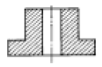
- 반단면
- 전단면
- 부분단면
- 계단단면
(정답률: 61%)

2. 파랑색에 흰색을 혼합하면 어떤 색이 되는가?
- 인근색
- 암청색
- 원색
- 명청색
(정답률: 87%)
3. 도면에 경사진 부분의 길이를 정확하게 표시한 그림은?
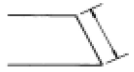
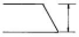
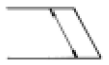
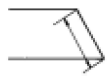
(정답률: 74%)
4. 주택, 실내장식물, 기구, 집기 등과 같이 영구적 혹은 반영구적인 것에 적합한 조화는?
- 유사적 조화
- 대비적 조화
- 형상의 조화
- 대소의 조화
(정답률: 63%)
5. 빨강, 파랑, 노랑 등의 원색만을 배색했을 때의 느낌은?
- 우울하다.
- 조용하다.
- 침착하다.
- 화려하다.
(정답률: 85%)
6. 색채의 감정에서 색채의 특성을 보편성으로 말한 것 중 잘못된 것은?
- 흥분, 침착의 감정
- 차가움과 따뜻한 감정
- 무관심의 감정
- 부드러움과 딱딱함의 감정
(정답률: 81%)
7. 화면 속에 한 개의 점을 시각적인 요소에서 볼 때의 느낌은?
- 면이 된다.
- 주의력이 집중된다.
- 수평방향을 느낀다.
- 텍스츄어를 느낀다.
(정답률: 73%)
8. 다음 그림은 주어진 직선 A, B를 한 변으로 하는 정육각형을 그리는 방법이다. 작도 순서상 제일 먼저 구해야 할 점은?
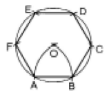
- A
- C
- E
- O
(정답률: 73%)
9. 다음 명시도에 대한 설명 중 틀린 것은?
- 고유의 특성에 의한 것보다 배경과 관계에 의하여 결정된다.
- 흑색 배경에는 황, 주황이 명시도가 높다.
- 명시도를 높이는 결정적인 조건은 채도이다.
- 황·주황 바탕에는 청·자색이 명시도가 높다.
(정답률: 47%)
10. 순색의 주황에 검정을 혼합하면 ?
- 명도는 변하지 않지만 색상은 변한다.
- 명도는 변하지만 색상은 변하지 않는다.
- 명도나 색상이 다 변하지 않는다.
- 명도나 색상이 다 변한다.
(정답률: 47%)
11. 다음은 어떠한 작업의 순서인가?
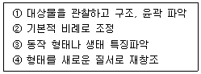
- 레터링
- 레이아웃
- 정밀화
- 편화
(정답률: 55%)
12. 색채의 강약을 표시하는 것은?
- 순색
- 색상
- 색상환
- 채도
(정답률: 65%)
13. 다음 그림과 관계 있는 것은?
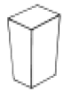
- 1소점 투시도
- 2소점 투시도
- 3소점 투시도
- 등각 투상도
(정답률: 50%)
14. 다음 중 자연의 형태가 아닌 것은?
- 엽맥
- 학의 날개
- 돌계단
- 물거품
(정답률: 63%)
15. 1907년 설립한 독일 공작 연맹에 의해 현대 공예의 실제적인 혁신을 이룬 독일 공작 연맹의 중심은 누구인가?
- 그로피우스(Walter Grapius)
- 무테지우스(Muthesius)
- 르코르 뷔지에(Le Corbusier)
- 모홀리 나기(Moholy Nagy)
(정답률: 54%)
16. 평면 디자인에서 계획, 구성, 배치 등을 목적에 맞게 사전계획하는 것을 무엇이라고 하는가?
- 아이디어
- 트리밍
- 레이아웃
- 포토 몽타즈
(정답률: 68%)
17. 길이를 재거나 또는 실제의 거리를 일정한 비율로 줄여 사용하는 자는?
- 운형자
- 삼각자
- 줄자
- 축척자
(정답률: 75%)
18. 다음 중 동일한 양의 물감을 혼합한 결과로 맞는 것은?
- 빨강 + 노랑 = 자주
- 파랑 + 노랑 = 남색
- 파랑 + 빨강 = 보라
- 노랑 + 보라 = 연두
(정답률: 75%)
19. 다음 중에서 색채조절이 잘된 것은?
- 공장 내부벽을 검정색으로 칠했다.
- 도서관 내부를 분홍색으로 칠했다.
- 수술실 내부벽을 청록색으로 칠했다.
- 식당 내부를 하늘색으로 칠했다.
(정답률: 64%)
20. 다음 그림과 같이 주어진 직선(A.B)을 수직 2등분할 때 잘못된 사항은?
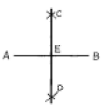
- AE = BE
- AC = BC
- AE = CE
- CD ⊥ AB
(정답률: 57%)
2과목: 목공예재료
21. 디자인의 조건에 관한 설명 중 잘못된 것은?
- 독창적이고 창조적이어야 한다.
- 심미성이 높아야 하므로 작가의 주관성을 특히 존중해야 한다.
- 최소의 자재와 노력으로써 최대의 효과를 거두어야 한다.
- 목적 자체가 합리적이고, 세부까지 명확해야 한다.
(정답률: 62%)
22. 다음 물체의 투상면 중 제1각법으로 된 것은?
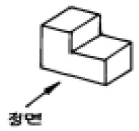
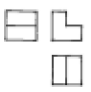
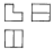
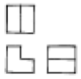
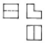
(정답률: 50%)
23. 다음 중 진공건조에 대한 설명은?
- 목재를 철제 실린더 안에 넣고 밀폐하여 저압조건에서 급속히 건조하는 방법
- 목재를 실린더 안에 넣고 용제(溶劑)를 매개로 하여 고온에서 급속히 건조하는 방법
- 건구온도 100℃ 이상에서 강제순환 방식으로 건조하는 방법
- 건조실에 목재를 쌓고 온도, 습도, 풍속 등을 인위적으로 조절하면서 건조하는 방법
(정답률: 60%)
24. 인공건조에 대한 설명 중 옳지 않은 것은?
- 건조기간이 단축된다.
- 건조시기에 구애 받지 않는다.
- 천연건조에서 일어나는 건조피해를 막을 수 있다.
- 일정 함수율 이하로 건조할 수 없다.
(정답률: 68%)
25. 목재표면에 있는 무수한 작은 구멍을 메우고 평활한 도장면을 만들어서 바탕을 견고하게 하고 상도도료의 흡입을 방지하는 도료는?
- 필러(Filler)
- 언더코트(Under coat)
- 퍼티(Putty)
- 프라이머(Primer)
(정답률: 59%)
26. 다음 접착제 생성에 따른 분류 중 접착제가 아닌 것은?
- 천연고분자
- 무기계고분자
- 반합성고분자
- 합성고분자
(정답률: 73%)
27. 목재 인공건조의 3대 조건으로 맞는 것은?
- 온도, 바람, 야적장
- 습도, 바람, 태양
- 온도, 습도, 바람
- 바람, 태양, 야적장
(정답률: 77%)
28. 프린트 합판이란?
- 표판의 섬유방향에 커터로써 VU형의 골을 만드는 것
- 압형에 무늬모양을 조각하여 가열한 것
- 얇은 금속판과 접착한 것
- 표판 위에 아름다운 목재의 무늬를 전사 인쇄한 것
(정답률: 72%)
29. 죽재의 벌채기로서 최적기는?
- 2 ~ 4월
- 4 ~ 5월
- 8 ~ 9월
- 9 ~ 11월
(정답률: 75%)
30. 대나무(할재)의 자연건조 기간은?
- 10 ~ 20 일
- 25 ~ 30 일
- 35 ~ 40 일
- 45 ~ 50 일
(정답률: 44%)
31. 아교에 대한 설명이 잘못된 것은?
- 동물성인 접착제로 반투명의 담갈색 고체이다.
- 용해된 아교를 반복 용해하여 접착력을 증가시킨다.
- 아교를 녹일 때에는 이중 용기에 넣고 서서히 용해시키는 것이 좋다.
- 내수성과 방부성을 높이고 아교의 건조 시간을 단축시키는데 포르말린을 사용한다.
(정답률: 56%)
32. 다음 목재 중 나이테가 확실하지 않은 것은?
- 소나무
- 참죽나무
- 느티나무
- 나왕
(정답률: 60%)
33. 다음 중 목재를 접착하는 합성수지계 접착제로서 가격이 저렴하고 접착력이 우수하여 널리 사용되고 있는 것은?
- 페놀수지
- 알킷수지
- 멜라민수지
- 요소수지
(정답률: 46%)
34. 합판의 특성에 대한 설명 중 옳지 못한 것은?
- 다양한 두께 및 넓은 폭을 얻기 쉽다.
- 수분의 변화에 따른 수축과 팽창이 적다.
- 목재 강도의 방향차(方向差)를 균등히 한다.
- 쪼개지거나 갈라짐이 많다.
(정답률: 73%)
35. 침엽수이며 심재는 담황갈색, 변재는 황백색이고, 건축재로 가장 많이 사용되는 것은?
- 단풍나무
- 느티나무
- 노송나무
- 너도밤나무
(정답률: 63%)
36. 수목이 성장중에 세포가 이상 발달되어 섬유방향이 불규칙하게 혼합되어 있는 목재의 흠은?
- 상처
- 껍질박이
- 썩정이
- 혹
(정답률: 58%)
37. 다음 중 목재의 바탕 조정법에 해당되지 않는 것은?
- 수지분 제거하기(옹이메움)
- 갈라짐, 벌레구멍, 틈 메우기
- 칼과 대패질 자국 없애기
- 부러진것 붙이기
(정답률: 66%)
38. 소리가 목재에 닿으면 일부는 흡수되고,일부는 통과하고, 일부는 반사한다. 이러한 목재의 성질을 이용한 것은?
- 조각재료
- 선박재료
- 악기재료
- 가구재료
(정답률: 79%)
39. 목재에 함유된 수분 중 결합수에 대한 설명으로 맞는 것은?
- 세포막에 침투되어 있는 수분이다.
- 목재의 중량에 영향을 미친다.
- 목재의 물리적 성질과는 관련이 없다.
- 유리수라고도 한다.
(정답률: 64%)
40. 목재의 건조전 중량이 100g이고, 전건상태의 중량이 80g 일 때 이 목재의 함수율은?
- 0.25%
- 20%
- 25%
- 30%
(정답률: 54%)
3과목: 목공예
41. 다음 중 안전 사고가 아닌 것은?
- 교통 사고
- 감전 사고
- 천재지변
- 작업 중 일어난 사고
(정답률: 76%)
42. 제작물의 판면에 색채나 광택이 있는 다른 재료를 파넣거나 맞추어 장식하는 기법은?
- 릴리프 조각 기법
- 상감 기법
- 맞춤 기법
- 투각 기법
(정답률: 59%)
43. 끌의 구조를 크게 나눈 세부분이 아닌 것은?
- 자루
- 목갱기
- 끌목
- 끌날
(정답률: 52%)
44. 다음 조각도를 사용할 때의 방법 중 가장 올바른 것은?
- 작업할 때 날끝 진행 방향에 한 손으로 일감을 잡아 주어 움직이지 않도록 한다.
- 가급적 한 가지로 통일하여 조각도를 선택하여야 좋다.
- 처음 시작에서 끝날 때까지 똑같은 힘을 주어 밀어 낸다.
- 나뭇결의 방향은 고려하지 않아야 원만한 조각이 된다.
(정답률: 71%)
45. 다음 톱 중 막니로 되어 있는 것은?
- 실톱
- 켜는 톱
- 자르는 톱
- 등대기톱
(정답률: 58%)
46. 오늘날의 우리 나라 공예가 전통보다 공예미나 구조면에서 서구적 양식의 양적공예로 발달하는 이유는?
- 유행성
- 저렴성
- 대량소비성
- 심미성
(정답률: 54%)
47. 둥근톱 기계 사용시 잘못된 방법은?
- 시동은 보조해 주는 사람이 조작한다.
- 작은 부재 가공시 보조 도구를 사용한다.
- 톱날 높이는 부재보다 3mm 정도 높게 조정한다.
- 기계를 사용한 후에는 주위를 정리한다.
(정답률: 76%)
48. 대팻날을 끼우는 물매 또는 끊는 날의 각은 몇 도 인가?
- 50°
- 38°
- 30°
- 25°
(정답률: 39%)
49. 끌의 일반적인 앞날의 표준 경사각은?
- 30°∼ 45°
- 20°∼ 30°
- 25°∼ 35°
- 45°∼ 50°
(정답률: 53%)
50. 표면이 매끈한 목재의 정밀한 작업에서 직선을 그을 때 오차를 최소화하기 위한 가장 적합한 선긋기 방법은?
- 심의 끝이 뾰족한 H 연필로 선을 긋는다.
- 심의 끝이 납작한 HB 연필로 선을 긋는다.
- 칼끝으로 선을 긋는다.
- 먹통을 이용해 선을 긋는다 .
(정답률: 72%)
51. 오동 나무와 같은 무른 나무로 공예품을 만들 때 가장 적합한 못은?
- 무두못
- 철못
- 나사못
- 나무못
(정답률: 70%)
52. 다음 도장 작업 중 신너의 소비량이 적고 두꺼운 도막을 얻을 수 있는 것은?
- 스프레이칠
- 주걱칠
- 호트래커칠
- 솜뭉치칠
(정답률: 46%)
53. 2차원적인 공간에서 모양이나 형상을 떠오르듯이 새긴 조각 기법은?
- 상감
- 부조
- 투조
- 환조
(정답률: 43%)
54. 전기 재해의 위험이 있는 것은?
- 배선의 피복 상태가 손상된 것을 수리한다.
- 설치된 전기 용량과 사용할 전기 기기와의 용량이 일치하는지를 확인한다.
- 누전을 확인할 때는 전체 전기 기구의 사용을 중지하고 살펴본다.
- 380V 이상의 전기를 사용한 전기 기기는 접지선을 제거한다.
(정답률: 68%)
55. 목공예용 측정 공구가 아닌 것은?
- 곡자
- 버니어 캘리퍼스
- 줄자
- 리버리지 게이지
(정답률: 75%)
56. 다음 중 가장 인장력이 강한 장부 맞춤은?
- 짧은 장부 맞춤
- 내다지 장부 맞춤
- 지옥 장부 맞춤
- 제비철 장부 맞춤
(정답률: 65%)
57. 자르는 톱니로, 정밀한 세공 및 장부 어깨를 자를 때 사용하는 톱은?
- 양날톱
- 붕어톱
- 쥐꼬리톱
- 등대기톱
(정답률: 71%)
58. 다음 산업재해 원인 중 가장 높은 재해 원인은?
- 가공물의 복잡성
- 불안전한 작업자의 행동
- 기계의 노후
- 작업 중 라디오 청취
(정답률: 76%)
59. 도장을 하는 목적이 아닌 것은?
- 물체의 표면을 보호하여 내구성을 줄인다.
- 방화, 방음, 방열 등의 특수 목적도 있다.
- 금속의 녹이나 목재의 부식을 방지한다.
- 색채를 조절하여 작업 능률을 높인다.
(정답률: 47%)
60. 다음 송곳의 종류 중 그 사용 용도가 틀린 것은?
- 세모 송곳은 깊은 구멍을 뚫을 때 사용한다.
- 반달 송곳은 둥근 모양의 나사 구멍을 뚫을 때 사용한다.
- 네모 송곳은 단단한 나무, 대나무의 정확한 구멍을 뚫을 때 사용한다.
- 돌보송곳은 돌보에 의해 회전시켜 구멍을 뚫을 때 사용한다.
(정답률: 59%)